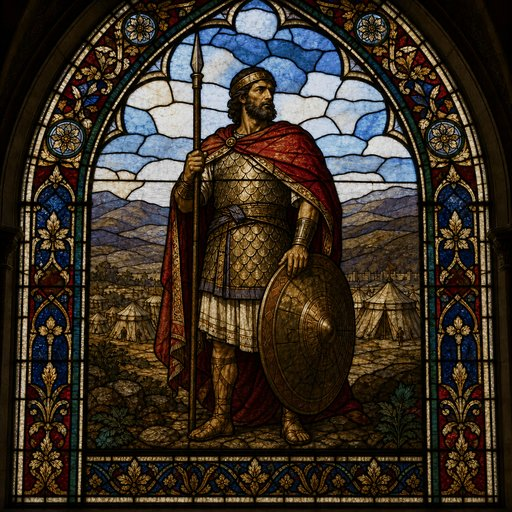

Amasiah (M)
First named in 2 Chronicles 17:16
Jehoshaphat, king of Judah, organized his kingdom's defenses by appointing commanders over large divisions of troops stationed throughout the land (2 Chronicles 17:12-19). Scripture lists these officers by name and by the size of the forces under them -- Adnah with 300,000, Jehohanan with 280,000, and then "next to him Amasiah the son of Zichri, who volunteered for the LORD, and with him 200,000 valiant warriors" (17:16). Among the commanders named in this roster, Amasiah alone receives this added note of personal devotion -- while the others are identified only by lineage and troop numbers, Amasiah is remembered specifically as a man who gave himself to the LORD's service willingly, not merely by appointment or birthright. The text does not elaborate further on what that volunteering looked like in practice, but the distinction Scripture draws between duty and devotion is itself the point: in a kingdom being strengthened militarily under a king who "walked in the earlier ways of his father David" and sought the LORD (17:3-4), Amasiah stands out as a man whose service to the throne flowed from a prior, deliberate commitment to God Himself.
Thought for Today
Among appointed officers, only Amasiah is remembered for volunteering himself to the LORD. Jesus wants willing hearts, not mere duty, from all who serve Him.
References: 2 Chronicles 17:16